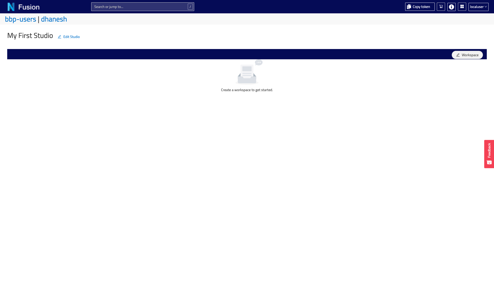
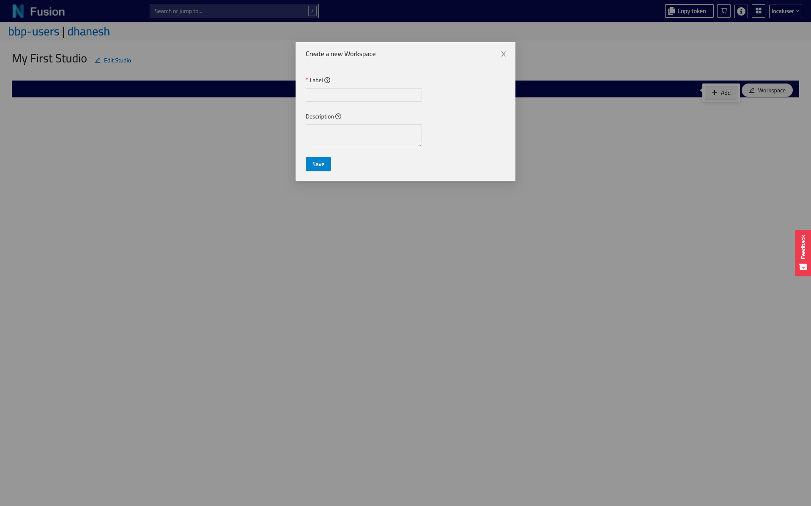
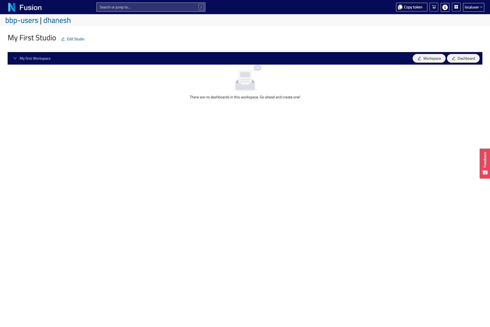
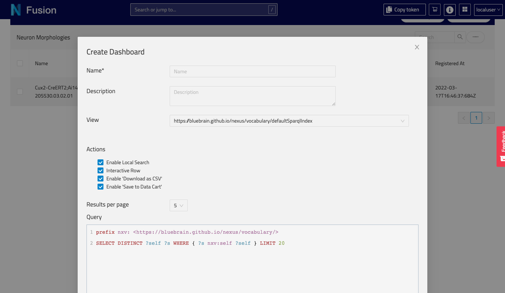

Studios
Studios space allows data curators to display their data using customisable, persistent queries. Using custom plugins developed with JavaScript, data curators can format the presentation of the query results any way they like.
To configure the Studios space index for your Nexus instance, see at the bottom of the page.
What is a Studio
A Studio is a collection of persistent queries organized in a table layout for users to quickly access relevant data in a customizable way. Studio authors can create a studio to match a specific topic, and create organization schemes called Workspaces and Dashboards to access various aspects of that data.
Want to configure a studio straightaway?
For example, a Studio might cover all datasets from the Neocortex, with a Workspace called Physiology and a Dashboard called Morphology Pipeline.
In essence, a Studio is a UI layer that performs queries according to a configuration that lives in a Nexus instance as a Resource. It has a label for a meaningful title and a description field to convey to the users what sort of data they can expect to find there. Most importantly, a Studio configuration has a Workspace collection.
{
"@context": "https://bluebrainnexus.io/studio/context",
"@type": "https://bluebrainnexus.io/studio/vocabulary/Studio",
"description": "",
"label": "test",
"workspaces": [
"https://nexussandbox.io/org/project/3bdf8b08-7b9a-443b-b04d-be2a048893ba"
]
}
A Studio will be given a URI for navigation or sharing.
About the Studio Context
In order for the Studio to work as intended with the UI, a context must be in the project. Its purpose is to direct the Knowledge Graph to understand how studio-specific properties behave, such as that Workspaces should be set (an unordered collection without duplicates).
If you create a Studio using the UI in Nexus Fusion, this resource will be created for you, if it doesn’t exist already. If you plan on bootstrapping your own projects programmatically, such as through the API, then you might need to take care to include it.
Every Studio resource that is created should reference this context resource as the @context property. For an example, see the Studio resource mentioned above. The default Studio context @id for all our examples will be https://bluebrainnexus.io/studio/context, and it is what Nexus Fusion will use.
Here’s what the context should look like:
"{
"@context": [
{
"@base": "https://bluebrainnexus.io/studio/",
"@vocab": "https://bluebrainnexus.io/studio/vocabulary/",
"label": {
"@id": "http://www.w3.org/2000/01/rdf-schema#label"
},
"name": {
"@id": "http://schema.org/name"
},
"description": {
"@id": "http://schema.org/description"
},
"workspaces": {
"@id": "https://bluebrainnexus.io/studio/vocabulary/workspaces",
"@container": "@set",
"@type": "@id"
},
"plugins": {
"@id": "https://bluebrainnexus.io/studio/vocabulary/plugins",
"@container": "@set"
},
"dashboards": {
"@container": "@set"
},
"dashboard": {
"@id": "https://bluebrainnexus.io/studio/vocabulary/dashboard",
"@type": "@id"
},
"view": {
"@id": "https://bluebrainnexus.io/studio/vocabulary/view",
"@type": "@id"
}
}
],
"@id": "https://bluebrainnexus.io/studio/context"
}"
Workspaces
A workspace is a collection of Dashboards paired with a View. You can have any number of Dashboard-View pairings organized into a Workspace. You can label a Workspace and add a description to help users understand what kind of content they can expect to find there.
{
"@context": "https://bluebrainnexus.io/studio/context",
"@type": "StudioWorkspace",
"dashboards": [
{
"dashboard": "https://bbp.epfl.ch/neurosciencegraph/data/8751df37-a75f-4858-b174-742264deb4e9",
"view": "nxv:defaultSparqlIndex"
},
{
"dashboard": "https://bbp.epfl.ch/neurosciencegraph/data/99982da8-ec3a-4f18-9388-a0cc81bfff0c",
"view": "nxv:defaultSparqlIndex"
}
],
"description": "",
"label": "MorphoTester"
}
Dashboards
A Dashboard is simply a query with a description and a label. This will be used by the Workspace to query against the view paired with it inside the Workspace configuration. This way, you can write one query, and re-use it against multiple potential views.
An example Dashboard resource looks like this:
{
"@context": "https://bluebrainnexus.io/studio/context",
"@type": "StudioDashboard",
"dataQuery": "prefix nxv: <https://bluebrain.github.io/nexus/vocabulary/>\nprefix s: <http://schema.org/>\nSELECT DISTINCT ?self ?familyName ?givenName\nWHERE {\n?s nxv:constrainedBy <https://neuroshapes.org/dash/person> ;\n nxv:self ?self ;\n s:familyName ?familyName ; \n s:givenName ?givenName\n}\nLIMIT 20",
"description": "A list of every scientist",
"label": "Scientists",
"plugins": ["nexus-plugin-example"]
}
The Dashboard, once configured, will present the results of your SPARQL query in a table. Each item in the row will be clickable and lead to a details page showing the Resource, in this case, a list of scientists that have contributed data to the project.
How to Configure a Studio
Studio Creation
To create a new Studio, go to the Admin space, and select an organization and a project. In the Project View, you will see the Manage Studios for this project button. It will bring you to the list of Studios.
Click the Create Studio button.
Fill in a form providing the following:
Label: the name of your new Studio (required field)Descriptionfor your Studio
- Click
Saveand you will be navigated to the Studio View.

That’s it! Your new Studio is empty for now, but don’t worry! We will add Workspaces and Dashboards later.
You can also find your Studios in the Resource List (for example, filter by type Studio, or Search by id) and view it in the Resource View.
Updating a Studio
Once created, the label and the description of a Studio can be changed. Just click Edit Studio button and update the Label and the Description fields.
Removing a Studio
To remove an unwanted Studio, deprecate it in the Resource View of your project in the Admin space.
Workspace Creation
Inside any Studio, click the Add Workspace button.
Fill in a form providing the following:
Label: the name of your newWorkspace(required field)Descriptionfor yourWorkspace

Click Save and you will be navigated to the new workspace section of your Studio View, which is given a navigable URI.

Your Workspace is created, but it will need to have at least one Dashboard/View association for anything to show there.
You can also find your Workspaces as raw JSON configurations in the Resource list (for example, filter by type StudioWorkspace, or search by id) and view it in the Resource View.
Updating a Workspace
Inside any Studio, under a Workspace tab label, click on the Edit link. Then you’ll be provided with a dialog where you can review and edit the Workspace configuration.
Select View: The view of which to pair with eachDashboardinside the follow transfer list. TheDashboardqueries will be run against theViewlisted inside this box. For now, using this Edit form, you can only pair oneViewfor allDashboards. If you were to create the configurations manually, you can pair eachDashboardwith a differentView.Add or Remove Dashboards: Add or remove aDashboardto the collection in yourWorkspaceconfiguration. TheDashboardslisted are all the available non-deprecated ones in the project.Name: the name of your newWorkspace(required field).Descriptionfor yourWorkspace.

After your forms have been edited, simple click Save to submit your changes.
Removing a Workspace
You can remove a Workspace by deprecating it from the Resource View.
Dashboard Creation
Inside any Studio View, under a selected Workspace, click the Add Dashboard button.
Fill in a form providing the following:
Label: the name of your newDashboard(required field)Description: an optional description for yourDashboardSparql Query: a valid SPARQL query that conforms to thedataQueryfield in the configuration.

You can click on the
View query in Sparql Editorto open theSparql Editorin a new tab to work on your query while querying it against aSparql Viewin your project, so you can make sure it works and provides the fields you want. Then, you can copy and past that back in the form.To understand more about the SPARQL queries requirements, check below.
Click Save and the Dashboard and its query results should show up!
You can now also add this Dashboard to other Workspaces across the project.
Updating a Dashboard
You’ll find the edit Dashboard under the dashboard label. After your form has been edited, simple click Save to submit your changes.
Removing a Dashboard
You can remove a Dashboard by deprecating it from the Resource View.
Sparql Query Requirements
The ?self variable
In order for the UI to function as intended, you must provide a unique ID variable inside your SPARQL statement, labeled as ?self. This will be used to generate the table and fetch resources when navigating to the details page of a row item. Ideally, this ?self variable should correspond with the _self of a target Resource of which to center your query against as a subject. The ?self variable will never be shown in the table, so you need some other variable in addition to view the results properly, or you’ll end up with a table without any rows.
Making queries visible
In addition to the ?self variable, you need to have at minimum one other variable defined, which will be displayed on each row. The variable name will label the header of the table column, capitalized.
The minimum functioning query with the ?self variable defined
# This is the minimum functioning query for Studio
prefix nxv: <https://bluebrain.github.io/nexus/vocabulary/>
SELECT DISTINCT ?subject ?self
WHERE {
?subject nxv:self ?self ;
}
LIMIT 20
Example SPARQL Queries
Here’s an example of fetching unique Persons using https://schema.org properties.
prefix nxv: <https://bluebrain.github.io/nexus/vocabulary/>
prefix s: <http://schema.org/>
SELECT DISTINCT ?self ?familyName ?givenName
WHERE {
?s nxv:constrainedBy <https://neuroshapes.org/dash/person> ;
nxv:self ?self ;
s:familyName ?familyName ;
s:givenName ?givenName
}
LIMIT 20
Configuring the Studios index page
The Studios space lists all the Studios you have permissions to view or edit.
To enable this feature, the following should be done:
-
If you don’t have a project to store the application data, create one.
-
Create an
Aggregated Elastic Search Viewinside this project, and add all of the projects that contain Studio resources to the list. For example:
{
"@context": "https://bluebrain.github.io/nexus/contexts/view.json",
"@id": "nxv:studioList",
"@type": ["View", "AggregateElasticSearchView"],
"views": [
{
"project": "c7d70552-4305-111a-trtr-75d757ed9a49",
"viewId": "nxv:defaultElasticSearchIndex"
},
{
"project": "86b0ee1e-a6a5-111b-rtrt-938b3c38dfc0",
"viewId": "nxv:defaultElasticSearchIndex"
},
{
"project": "a7d693345-8d1d-rtrt-111a-90b6b6ab94ee",
"viewId": "nxv:defaultElasticSearchIndex"
}
]
}
Ask a developer to add an ENV variable with the location of the ‘AggregateElasticSearchView’ as following:
STUDIO_VIEW=[yourOrgLabel]/[yourProjectLabel]/[viewId]
In our example it would be:
STUDIO_VIEW=webapps/nexus-fusion/nxv:studioList
Every time when you create a new Studio, the AggregateElasticSearchView needs to be updated.